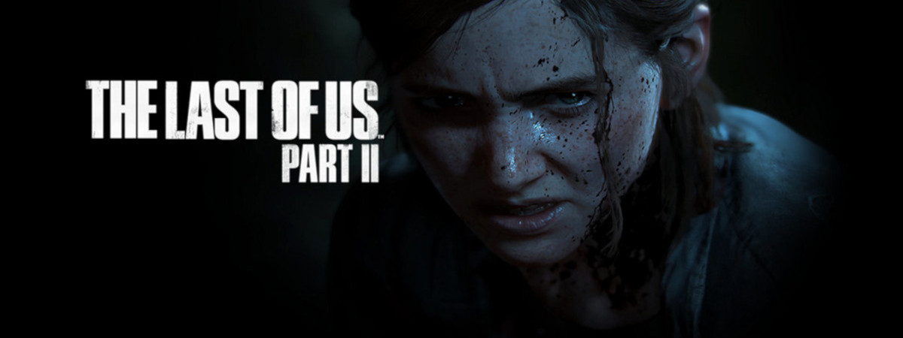
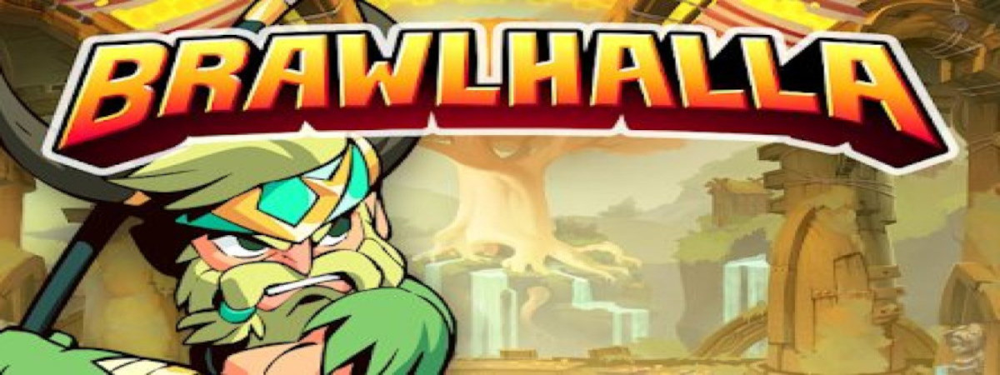
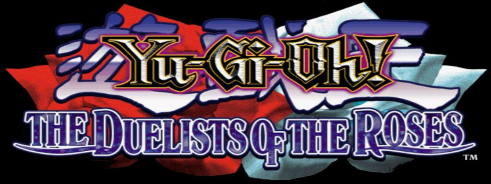

- 
- 


- 
Um jogo de plataforma é um gênero de jogos eletrônicos onde você controla um personagem que deve pular em plataformas e passar por diversos outros obstáculos para atingir um objetivo.
Esse gênero está presente em vários tipos de jogos diferentes, sejam eles em 2D, 3D, com ou sem mecânicas de tiro e também com temáticas diversas.
Alguns populares jogos com esse estilo são: Super Mario Bros; Donkey Kong; Super Smash Bros...

A Origem do jogo de plataforma Foi no início dos anos 80 que os jogos de plataforma começaram a invadir os videogames, existiu uma época onde esse gênero era o mais popular, especificamente nos anos 90.
Partindo da definição de que é necessário “pular” plataformas em sua gameplay, o primeiro jogo no gênero plataforma foi o Donkey Kong lançado em 1981.
O Donkey Kong é um jogo que fez história não só por ser o primeiro jogo de plataforma, mas ele foi o início da incrível saga do macaco mais famoso dos jogos e a primeira introdução de Mario ao mundo. Antes dele foi lançado um jogo chamado Space Panic que tinha plataformas no ambiente do game, mas não havia a função de pulo, o personagem subia escadas.
Alguns acreditam que ele foi o primeiro jogo de plataforma, mas a grande maioria considera o Donkey Kong o primeiro.
Um clássico “Metroidvania” com gráficos feitos à mão e uma atmosfera muito sombria. É outro dos jogos de plataforma que aliam com perfeição controles precisos, história envolvente e uma infinidade de segredos a serem explorados pelos jogadores. Também foi amplamente premiado em seu lançamento, recebendo notas altíssimas da crítica especializada.
Brawlhalla: os maiores guerreiros da história lutam para provar quem é o melhor em um teste épico de força e habilidade. Esses slugfests são temperados com armas e dispositivos poderosos. Cada arma que você pega muda seu estilo de jogo
Para alguns, Ori pode ser descrito como uma verdadeira obra de arte. Sua história emociona, levando os players por uma jornada de sobrevivência e amizade. Também se encaixa na descrição de “Metroidvania”, havendo uma série de habilidades e rotas a serem descobertas pelos jogadores. É um pouco mais linear e fácil do que Hollow Knight, sendo uma ótima pedida para aqueles que querem começar a explorar jogos de plataforma.